Timing Belt: Service and Repair
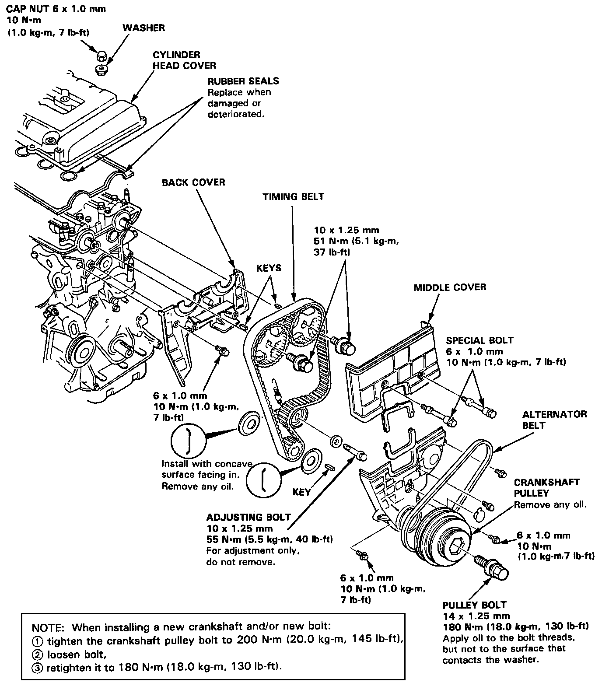
Timing Belt / Removal
NOTE: Turn the crankshaft pulley so that the No. 1 piston is at top dead center (TDC) before removing the belt.
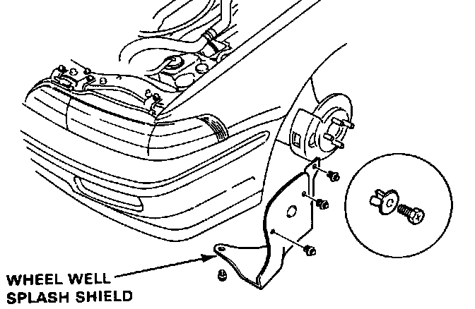
1. Remove the wheel well splash shield.
2. Remove the power steering (P/S) pump belt and power steering pump.
Do not disconnect the power steering hoses.
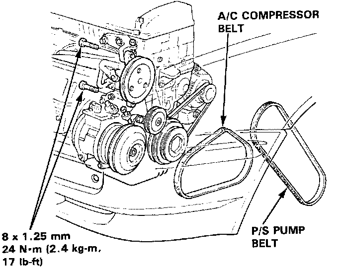
3. Remove the air conditioning (A/C) compressor belt (Standard for some types).
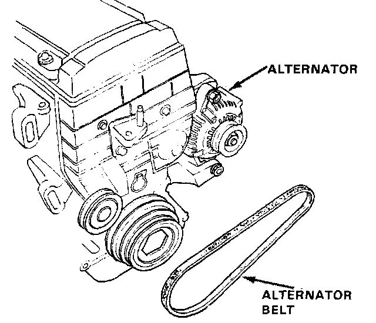
4. Remove the alternator belt.
NOTE: After installation, adjust the tension of each belt.
- Refer to Charging System for alternator belt adjustment.
- Refer to Steering System, for power steering pump belt adjustment.
- Refer to Heating and Air Conditioning, for air conditioning compressor belt adjustment.
- Mark direction of rotation before removing.
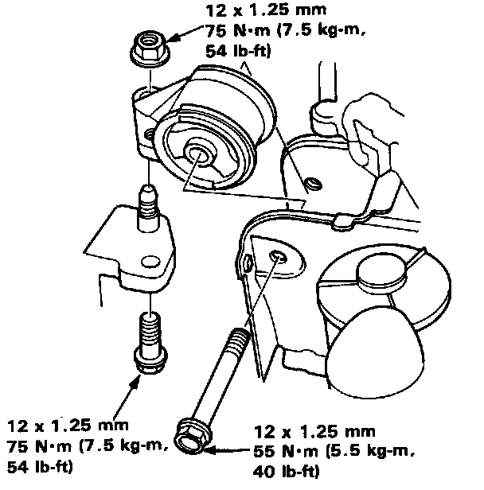
5. Remove the side engine support bolts and nut, then remove the side engine mount.
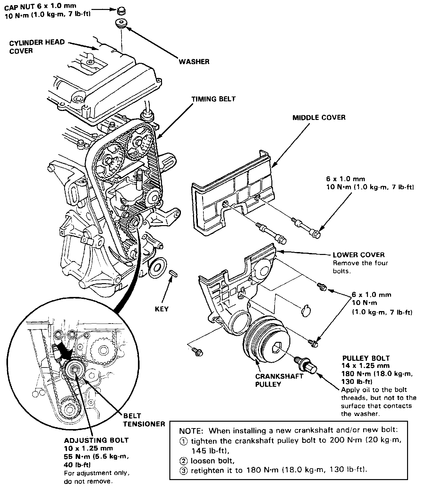
6. Remove the cylinder head cover.
7. Remove the pulley bolt and crankshaft pulley.
8. Remove the middle cover and the lower cover.
9. Loosen the adjusting bolt 180°.
10. Push the tensioner to release tension from the belt, then retighten the adjusting bolt.
11. Remove the timing belt from the pulleys.
Installation
NOTE: When installing a new crankshaft and/or new bolt:
(1) tighten the crankshaft pulley bolt to 200 N.m (20.0 kg.m, 145 lb.ft)
(2) loosen bolt
(3) retighten it to 180 N.m (18.0 kg.m, 130 lb.ft)
1. Install the timing belt in the reverse order of removal;
Only key points are described here.
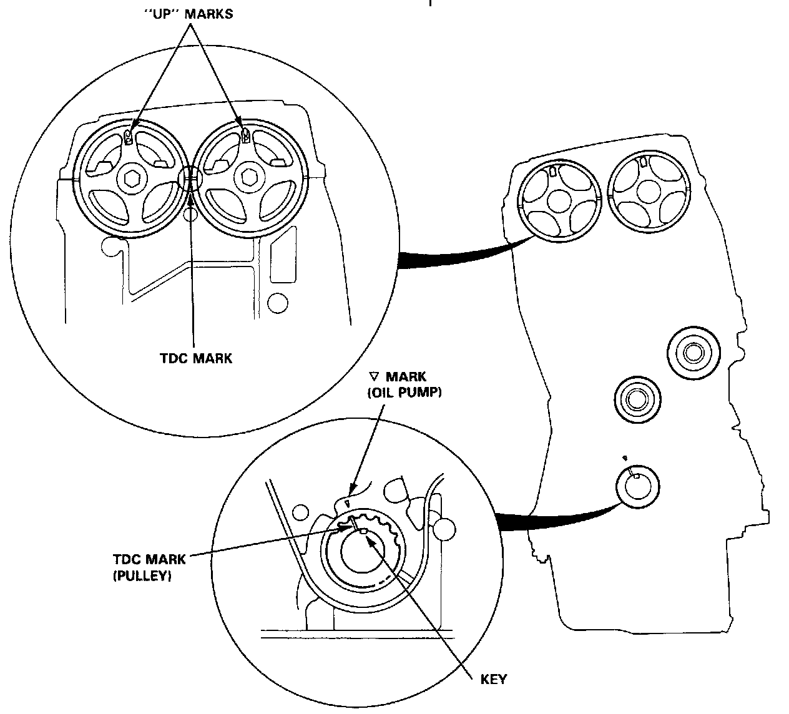
2. Position the crankshaft and the camshaft pulleys as shown before installing the timing belt.
A. Set the crankshaft so that the No. 1 piston is at top dead center (TDC). Align the groove on the teeth side of the timing belt drive pulley to the ("triangle mark") pointer on the oil pump.
B. Align the TDC marks on intake and exhaust pulleys.
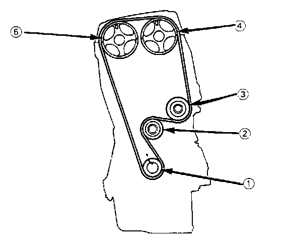
3. Install the timing belt tightly in the sequence shown.
(1) Timing belt drive pulley (crankshaft)
(2) Adjusting pulley
(3) Water pump pulley
(4) Intake camshaft pulley
(5) Exhaust camshaft pulley
4. Loosen the adjusting bolt and retighten it after tensioning the belt.
5. Rotate the crankshaft about 4 or 6 turns counter-clockwise so that the belt positions on the pulleys.
6. Adjust the timing belt tension.
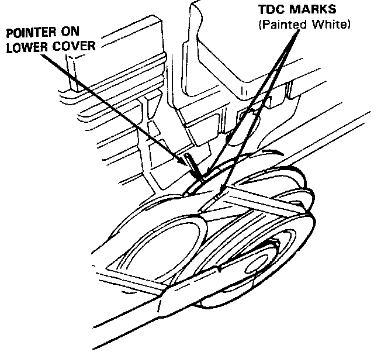
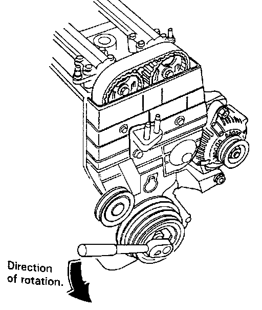
7. Check the crankshaft pulley and the camshaft pulleys at TDC.
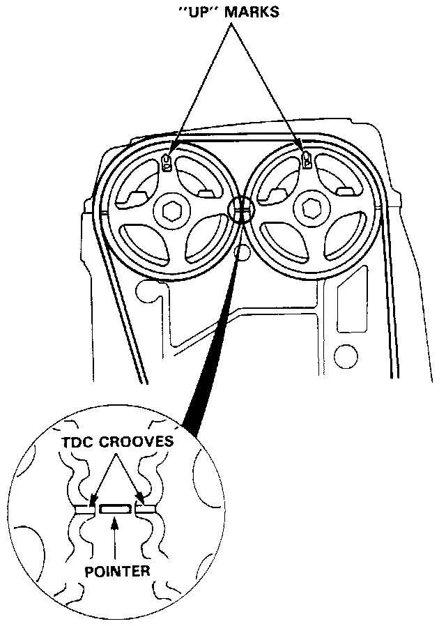
8. If a camshaft pulley is not positioned at TDC, remove the timing belt and adjust the positioning, then reinstall the timing belt.
NOTE: After installation, adjust the tension of each belt.
- Refer to Charging System for alternator belt adjustment.
- Refer to Steering System, for power steering pump belt adjustment.
- Refer to Heating and Air Conditioning, for air conditioning compressor belt adjustment.